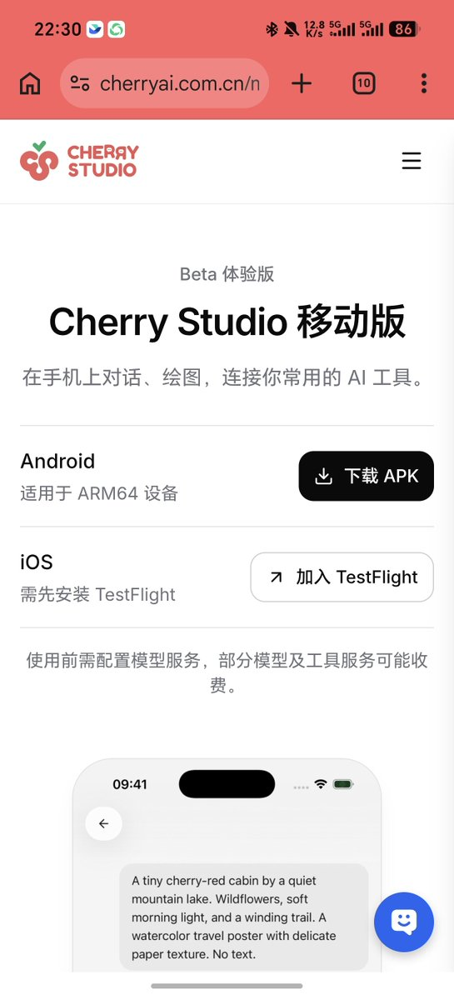
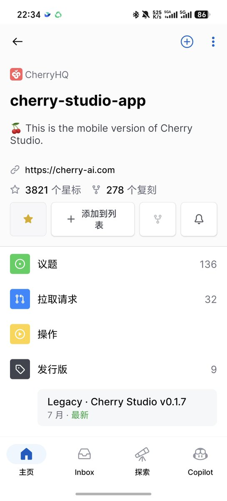

奶昔🥤
@realNyarime
我刚开始接触LLM也是通过朋友的中转站配合Cheery Studio，可惜没有移动版所以只在电脑上用，很开心看到它出移动版了！
如果把中转站比喻成VPN机场，那Cherry Studio就是那个Clash，刚刚下了Android公测版试了下还不错，再优化下移动端的逻辑就更好了～
最后感谢Yinsen老师及他们团队的维护，感谢你们启蒙了我的AI，祝好🎉


Yinsen
@YinsenW_
Cherry Studio 移动端可以说是市面上最流畅、最简洁的开源 AI 客户端之一，同时也是独一无二的、集成了 Pi 的移动 Agent App。
公测版已经发布，大家可以去官网下载了（支持 Android 与 iOS）
代码同步在 GitHub 开源 https://t.co/bLXH0mZudu